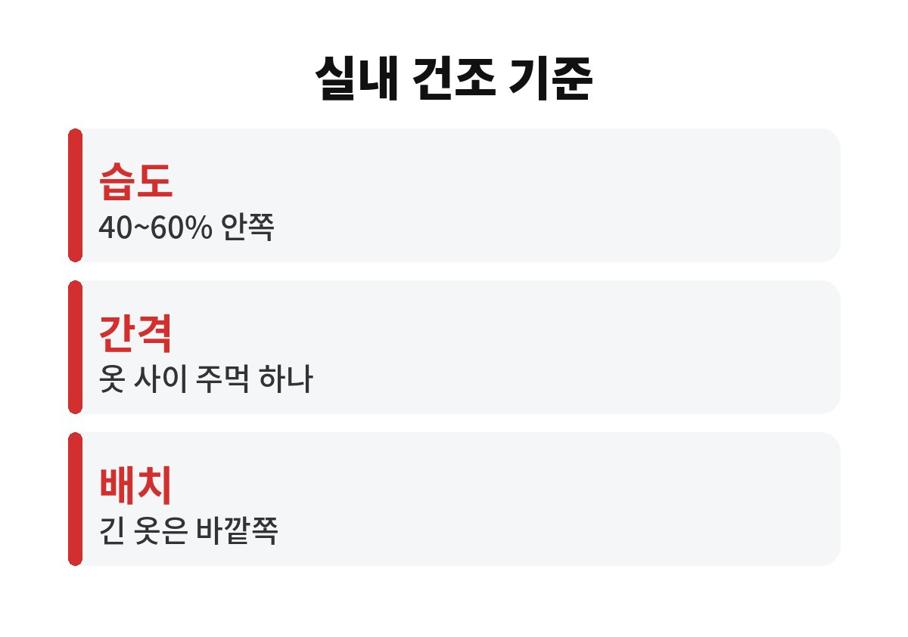
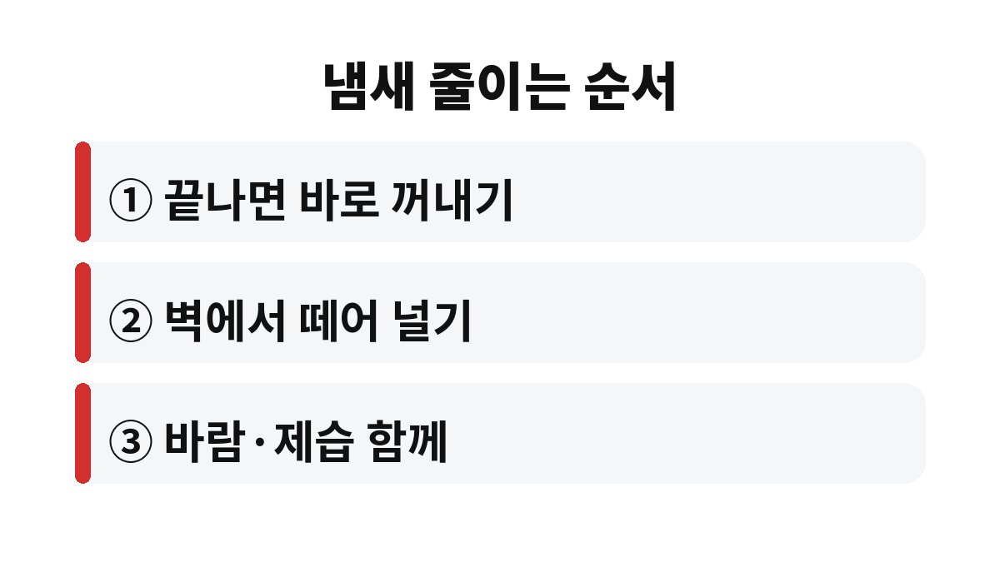

실내 빨래 냄새는 세제를 더 넣는다고 사라지지 않고, 빨래가 젖어 있는 시간을 줄여야 잡힌다.
겨울에는 창문을 닫아 두는 시간이 길어서 빨래 한 번 마르는 데 반나절을 넘기기 쉽다.
그 긴 시간 동안 섬유 속에 남은 물기가 퀴퀴한 냄새로 바뀐다.
건조대를 어디에 두는지, 옷을 어떤 간격으로 거는지만 바꿔도 마르는 속도가 달라진다.
빨래가 빨리 마르려면 따뜻한 공기, 낮은 습도, 움직이는 바람 세 가지가 맞아야 한다.
겨울 집 안은 난방 덕분에 온도는 확보되지만 바람과 습도가 문제다.
질병관리청은 겨울철 실내 습도를 40~60%로 안내하는데, 문을 닫은 작은 방에 세탁기 한 통 분량을 널면 습도가 금세 이 범위를 넘어선다.
퇴근 후 저녁에 빨래를 널고 다음 날 아침에 걷으려는데 두꺼운 후드티 소매와 청바지 허리춤만 축축하게 남아 있는 장면이 겨울에 자주 생긴다.
겉은 말랐는데 속이 덜 마른 상태로 개어 두면 서랍 안에서 냄새가 더 짙어진다.
| 건조 장소 | 공기 흐름 | 살펴볼 점 |
|---|---|---|
| 문 닫은 작은 방 | 거의 없다 | 습기가 빠질 곳이 없어 오래 젖어 있다 |
| 거실 한가운데 | 사방으로 통한다 | 벽·가구와 거리를 두기 쉽다 |
| 베란다 | 바깥 기온 영향이 크다 | 한파 날에는 낮에도 더디게 마른다 |
| 욕실 | 습기가 고여 있다 | 샤워 직후 습기가 빨래에 다시 붙는다 |
표에서 보듯 겨울에는 거실 한가운데가 가장 무난한 자리다.
다만 거실에 널면 거실 습도도 함께 오르므로 그날은 가습기를 끄고 두는 편이 맞다.

세탁이 끝난 빨래를 통 안에 둔 채 몇 시간 지나면 널기 전부터 냄새가 배기 시작한다.
밤에 세탁을 돌려 두고 아침에 꺼내는 습관이 겨울 쉰내의 흔한 출발점이다.
예약 세탁 기능이 있다면 일어나는 시각이나 귀가 시각에 맞춰 끝나도록 맞춰 두면 된다.
냄새가 걱정돼 세제를 더 넣으면 헹굼 뒤에도 세제 찌꺼기가 섬유에 남기 쉽다.
남은 세제는 물기를 붙잡아 마르는 시간을 늘리고, 오히려 냄새의 원인이 된다.
세제 용기에 적힌 빨래 양 기준을 따르고, 세탁기에 빨래를 가득 채우지 않는다.
빨래가 너무 많으면 헹굼과 탈수가 고르게 되지 않아 일부만 젖은 채로 나온다.
벽에 붙인 건조대는 한쪽 면으로만 공기가 닿아 안쪽 옷이 늦게 마른다.
옷과 옷 사이는 주먹 하나가 들어갈 만큼 띄운다.
긴 옷과 두꺼운 옷은 바깥쪽에, 짧고 얇은 옷은 가운데에 걸면 아래에서 들어온 공기가 위로 빠져나갈 길이 생긴다.
선풍기는 빨래 정면보다 아래쪽에서 위로 바람이 지나가도록 둔다.
제습기를 쓸 때는 문을 닫은 방에 빨래와 함께 두어야 습기를 모아서 뺄 수 있다.
반대로 문을 열어 둔 거실에서는 제습기 혼자 집 전체 습기를 상대하게 되어 마르는 시간이 크게 줄지 않는다.
냄새가 밴 옷은 향이 강한 섬유유연제로 덮기보다 한 번 더 헹구고 탈수한 뒤 빨리 말리는 쪽이 낫다.
향으로 덮으면 마른 뒤에도 두 냄새가 섞여 남는다.
산소계 표백제나 식초를 쓸 때 염소계 표백제와 함께 넣으면 안 되며, 제품 표시에 적힌 사용량과 섬유 종류를 먼저 확인한다.
이 방법이 통하지 않는 빨래도 있다.
패딩이나 두꺼운 겨울 이불은 거실에 하루를 널어도 속까지 마르지 않는 경우가 많다.
이런 빨래는 건조기나 빨래방 건조기를 쓰고, 제품 라벨에 건조기 사용 금지 표시가 있는지 먼저 본다.

실내 빨래 냄새가 계속 남는다면 빨래보다 세탁기 고무패킹과 세제함 상태를 먼저 본다.
세탁기 안쪽에서 냄새가 나면 아무리 잘 널어도 같은 냄새가 다시 옷에 옮는다.
참고 자료: 질병관리청 「겨울철 건강관리 수칙 – 실내 적정 온도·습도」(2026년 11월 확인)
※ 2026년 기준 공공기관 안내를 바탕으로 정리한 글이며, 집 구조와 제품에 따라 결과가 다를 수 있어 제품 설명서를 함께 확인하길 바란다.